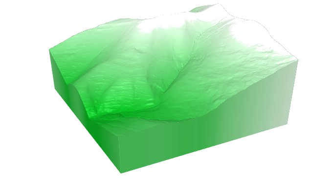

Modelos Digitales del Terreno
Un Modelo Digital del Terreno o MDT, DTM en inglés, es una representación numérica de una variable espacial, que se distribuye de forma continua sobre el territorio.
Cuando se trata de representar la geomorfología del suelo de un territorio mediante el modelizado de su cota o altura, estos modelos se denominan Modelos Digitales de Elevaciones (MDE).
En ciencias de la tierra, además de los modelos digitales de elevaciones, tienen especial interés los modelos de pendientes y orientaciones.
Cuando en lugar de representar el suelo desnudo, se quiere modelizar este junto con los objetos que se encuentran sobre él, se utiliza el término Modelo Digital de Superficie (MDS).
En análisis LiDAR el MDS tiene especial interés, ya que existe la posibilidad de simbolizar cada punto del modelo en función de su valor clasificado, lo que permite un análisis visual muy rápido de los resultados de la clasificación.
Tipos de modelos
Los modelos digitales del terreno, generalmente se representan mediante estructuras geométricas, en las que cada uno de sus nodos codifica el valor de la variable a modelizar en ese punto o tesela del territorio.
Estas estructuras pueden ser regulares: cuadradas, rectangulares, triangulares, hexagonales... o irregulares, siendo los casos más habituales, las mallas cuadradas regulares y las redes de triángulos irregulares (TIN).
Las nubes de puntos LiDAR, una vez estos han sido convenientemente clasificados, permiten generar modelos digitales del terreno de gran precisión y exactitud.
A partir de los puntos LiDAR clasificados como tipo 2 (Ground), se pueden calcular modelos digitales de elevaciones, pendientes y orientaciones, que representan el suelo de un territorio, desprovisto del resto de elementos, tanto naturales como antrópicos.

MDTs de la C.A. de La Rioja
El Gobierno de La Rioja, produce y mantiene distintas colecciones de MDTs de referencia, para las variables espaciales de: elevación, pendiente y orientación.
Estos modelos se distribuyen siguiendo una estructura de mallas cuadradas regulares de distinta resolución: 1x1m, 2x2m y 5x5m, cubriendo todos los casos el territorio completo de la Comunidad Autónoma de La Rioja (España).
Los modelos se calculan y actualizan, en sus distintas resoluciones y especialidades, a partir de los datos LiDAR disponibles más recientes.